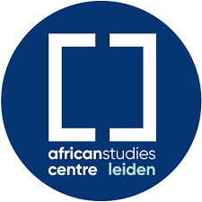

This overview is based on this XML output of the GLAMorous tool d.d. 17-01-2024.
It was generated using the GLAMorousToHTML Python script.
Also see the documentation of this tool.
English (239)
1973 All-Africa Games --
1978 --
2010 Zambian census --
AK-47 --
Abdullahi dan Fodio --
Abubakar Tafawa Balewa --
Africa-Europe Group for Interdisciplinary Studies --
African Party for the Independence of Guinea and Cape Verde --
African Studies Centre Leiden --
African dance --
Ag Mohammed Wau Teguidda Kaocen --
Agnes Nebo von Ballmoos --
Agriculture in Uganda --
Ahmadu Bello --
Algaita --
Alphonso Lisk-Carew --
Andragogy --
Anglican Diocese of Kigali --
Armed Forces of Liberia --
Athletics at the 1973 All-Africa Games --
Babban Gwani --
Balafon --
Banankoni --
Bani, Bani --
Bauchi --
Bauchi Emirate --
Beer --
Bete Amhara --
Betty Ogwaro --
Biafra --
Billy Kahora --
Bipindi --
Bitòn Coulibaly --
Blackboard --
Bni Oulid --
Bobo-Dioulasso --
Bomb --
Breastfeeding --
Burundi–Rwanda relations --
Catholic Church in Somaliland --
Cecil Majaliwa --
Chadli Bendjedid --
Chief of Army Staff (Nigeria) --
Chief of Defence Staff (Nigeria) --
Child soldiers in Africa --
Cholera vaccine --
Christianity in Somaliland --
Circumcision --
Condiment --
Crab --
Crime in Liberia --
Cuban medical internationalism --
Cultivation of tobacco --
Culture of Somalia --
DDT --
Dabo kolo --
Die Burger --
Diseases of the foot --
Dori, Burkina Faso --
Douz --
Drummer --
Education in Africa --
Edward J. Roye Building --
Emile van Rouveroy van Nieuwaal --
Falémé River --
Farmington River (Liberia) --
Female education --
Food storage --
Foreign interventions by Cuba --
Fourah Bay --
Fourah Bay College --
Francisco Mendes --
Francophone economy --
Fula people --
Funeral --
GAZ-66 --
Gabriel Tucker Bridge --
Germaine Dieterlen --
Gibson Jalo --
Great Mosque of Kano --
Great Mosque of Niono --
Great Zimbabwe --
Guinea-Bissau War of Independence --
Hanging --
Hargeisa --
Hargeisa International Book Fair --
Hausa architecture --
Hausa people --
Healthcare in Senegal --
Hematocrit --
History of Durham University --
History of Johannesburg --
Ibadan School --
Idi Amin --
Illiya Bisalla --
In Guezzam --
Independence Monument, Lome --
Institut National des Arts de Bamako --
Institut d'études politiques de Bordeaux --
Itumba --
Jainism in Africa --
Jama Musse Jama --
James Barnor --
James Stevenson-Hamilton --
Jane Drew --
Jean Rouch --
Jellabiya --
Jerónimo Lobo --
Jet injector --
Johannesburg City Library --
Jomo Kenyatta International Airport --
Jos --
Josiah Mwangi Kariuki --
Julia Duncan-Cassell --
Kainji Dam --
Kapsiki people --
Kenneth Dike --
Kenyatta International Convention Centre --
Kribi --
Kwame Nkrumah --
LAMCO --
Laas Geel --
Liberian National Coast Guard --
List of African dishes --
List of Africanists --
List of colonial governors of Ruanda-Urundi --
List of dams and reservoirs in Nigeria --
List of donkey breeds --
List of governors of Tanganyika --
List of heads of government who were later imprisoned --
List of heads of state of Nigeria --
List of ksour in Tunisia --
List of musical instruments --
List of pastoral visits of Pope John Paul II --
List of presidents of Guinea-Bissau --
List of prime ministers of Guinea-Bissau --
List of weapons of the Portuguese Colonial War --
Luís Cabral --
Léré, Mali --
Manuel de Almeida --
Manuel dos Santos 'Manecas' --
Manure --
Marcel Griaule --
Marketing --
Maryland ritual killings --
Mathematics education --
Maxwell Fry --
Megan Vaughan --
Mende people --
Mercedes-Benz 600 --
Military dictatorship in Nigeria --
Moeletsi Mbeki --
Mogode --
Mogodé --
Molteno Regulations --
Monarchy of Nigeria (1960–1963) --
Mooré --
Mopti --
Mosque --
Mother --
Mowbray, Cape Town --
Nakedness and colonialism --
Nalubaale Hydroelectric Power Station --
National Library of Somaliland --
National Library of South Africa --
National Stadium, Lagos --
Netherlands-African Business Council --
Netherlands–South African Railway Company --
Nigel Randell Evans --
Nigeria --
Nigerian Civil War --
Nile Delta flooded savanna --
Nursing --
Office de Radiodiffusion-Télévision du Mali --
Ogotemmeli --
Olusegun Obasanjo --
Oscar Baumann --
Palaver (custom) --
Panguma --
Parliament of the Cape of Good Hope --
Patrick Chabal --
Paul Richards (anthropologist) --
Physical examination --
Pipe smoking --
Ploceidae --
Postage stamps and postal history of Biafra --
Postage stamps and postal history of Zanzibar --
Potchefstroom University for Christian Higher Education --
Public health --
Pullman (car or coach) --
Rainwater harvesting in the Sahel --
Rio de Canjambari --
Rissani --
Robben Island --
Rocket-propelled grenade --
Ruanda-Urundi --
Sande society --
Sangha, Mali --
Sankoré Madrasah --
School band --
Serving size --
Sierra Leone --
Sierra Leone Creole people --
Sierra Leone Government Railway --
Sistrum --
Sjoerd Hofstra --
Skukuza --
Somali National Movement --
Stone Town --
Stretcher --
Surgical suture --
Swakopmund --
Ségou --
Tanganyika Territory --
Tanganyika groundnut scheme --
Tank truck --
Taounate --
Teacher --
The Amazing Race 12 --
Timbuktu --
Tireli, Mali --
Tominian --
Toro, Nigeria --
Totota --
Tozeur --
Transport in Burkina Faso --
University of Ibadan --
University of Khartoum --
Vice President of Guinea-Bissau --
Waiting room --
West African Development Bank --
William Tolbert --
Women and smoking --
Women in Africa --
Zambia --
Zanzibar City --
Ziguinchor --
Zimbabwe International Book Fair --
Ʋ
French (86)
1923 --
Addis-Abeba --
Afrika-Studiecentrum Leiden --
Arme factice --
Assamaka --
Bani (Bani) --
Banque ouest-africaine de développement --
Barrage de Sennar --
Betty Ogwaro --
Bibliothèque nationale d'Afrique du Sud --
Bibliothèque nationale d'Algérie --
Bipindi --
Bureau de poste --
Casbah d'Alger --
Cathédrale Notre-Dame-de-Miséricorde de Cotonou --
Centre historique d'Agadez --
Circoncision --
Compétences coloniales de la Cour de cassation belge --
Condiment --
Couscous --
Dabo kolo --
Enseignement des mathématiques --
Faculté des sciences humaines et sociales (Bénin) --
Falémé --
Francisco Mendes --
Frontière entre le Bénin et le Niger --
Fumer la pipe --
Gamia --
Germaine Dieterlen --
Grande Mosquée de Kano --
Guinée-Bissau --
In Guezzam --
Institut d'études politiques de Bordeaux --
Institut national des arts de Bamako --
Internationalisme médical cubain --
Jane Drew --
Jean Rouch --
Kaocen --
Kapsiki (peuple) --
Ksar Boughali --
Ksar El Rosfa --
Ksar Ommarsia --
Lac Tanganyika (écorégion) --
Liste de fortifications en Algérie --
Liste de mosquées d'Algérie --
Liste de plats africains --
Liste des Premiers ministres de Guinée-Bissau --
Liste des chefs d'État bissau-guinéens --
Liste des ksour en Tunisie --
Liste des ports au Cameroun --
Maiduguri --
Meurtre rituel --
Moa (fleuve) --
Mogodé --
Monument de l'Indépendance (Lomé) --
Mopti --
Moré --
Nefta --
Oscar Baumann --
Parti africain pour l'indépendance de la Guinée et du Cap-Vert --
Patrick Chabal --
Peuls --
Polygamie --
Ports au Cameroun --
Province de Taounate --
Rallye Safari 1986 --
Rhoumzou --
Région de l'Extrême-Nord --
Sangha (Mali) --
Sistre --
Skukuza --
Société Sande --
Sonnailles bamilékées --
Statue de la Reine Victoria (Port Elizabeth) --
Syndrome d'immunodéficience acquise --
Tambour --
Tanout (département) --
Teranga (Sénégal) --
Tireli (Mali) --
Tominian --
Tourisme au Mali --
Vaccin contre le choléra --
William Richard Tolbert --
École --
Économie de la francophonie --
Éducation en Afrique
German (58)
Afrikaspiele --
Algaita --
Arlit (Departement) --
Assamaka --
Bahnstrecke Yekepa–Buchanan --
Betty Ogwaro --
Bipindi --
Cases Allemandes --
Choleraimpfstoff --
Château 1 --
Dodo (Kult) --
Edward J. Roye Building --
Fourah Bay College --
Francisco Mendes --
Fulbe --
Germaine Dieterlen --
Große Moschee von Agadez --
Große Moschee von Kano --
Impfpistole --
In Guezzam --
James Barnor --
Jane Drew --
Jean Rouch --
Josiah Mwangi Kariuki --
Katanga (Agadez) --
Liste der Ramsar-Gebiete in Niger --
Liste der Staatsoberhäupter von Guinea-Bissau --
Liste französischer Forts in der algerischen Sahara --
Luís Cabral --
Lété (Insel) --
Mare de Tabalak --
Missionsgeschichte in Namibia --
Moabrücke --
Moeletsi Mbeki --
N25 (Niger) --
Nationalbibliothek von Südafrika --
Nationale Bewegung der Entwicklungsgesellschaft --
Niono --
Originalgebäude des Fourah Bay College --
Oskar Baumann (Geograph) --
Patrick Chabal --
Poro (Geheimbund) --
Portugiesischer Kolonialkrieg --
Rheinische Missionsgesellschaft --
Sansibar (Stadt) --
Schienenverkehr in Liberia --
Schienenverkehr in Sierra Leone --
Schule --
Sierra Leone Mountain Railway --
Spielzeugwaffe --
Sultanspalast von Agadez --
Tabalak --
Tabato --
Tabelot --
Tanout --
Tanout (Departement) --
Tchirozérine (Departement) --
University of Ibadan
Dutch (55)
Accra --
Afrikanistiek --
Afterlives --
Agadez-moskee --
Appelplaats --
Balé --
Belgische koloniën --
Bier --
Brancard --
Chilipoeder --
Domingos Ramos --
Emile van Rouveroy van Nieuwaal --
Francisco Mendes --
GAZ-66 --
God (algemeen) --
Hargeisa --
Hechten (medisch) --
Hematocriet --
Ineke van Kessel --
Internationale Boekenbeurs van Zimbabwe --
Jomo Kenyatta International Airport --
Kapsiki --
Kat (dier) --
Katvis (baarsachtige) --
Laminaire stroming --
Leraar (voortgezet onderwijs) --
Luis Cabral --
Mandaatgebied --
Mende (volk) --
Minaret --
Mopti (stad) --
More (taal) --
Nationale Beweging voor de Ontwikkeling van de Maatschappij --
Nederlandsch-Zuid-Afrikaansche Spoorwegmaatschappij --
Nsukka --
Partido Africano da Independência de Guiné e Cabo Verde --
Patrick Chabal --
Polygamie --
Raketwerper --
Robbeneiland --
Roel Coutinho --
Ruanda-Urundi --
School (instelling) --
Sjoerd Hofstra --
Skukuza --
Slaap (rust) --
Tireli --
Toguna --
Turbulente stroming --
Ui (plant) --
Vereniging Wikimedia Nederland --
Vernie February --
Volwassenenonderwijs --
Wevers en verwanten --
Ziguinchor (stad)
Spanish (46)
Almacenamiento de alimentos --
Alphonso Lisk-Carew --
Aprendizaje de la lectura --
Asesinato ritual --
Assamakka --
Biblioteca Nacional de Sudáfrica --
Biblioteca de la Ciudad de Johannesburgo --
Brachyura --
Canoa --
Construye Mundo --
Danza africana --
Departamento de Tanout --
Dicloro difenil tricloroetano --
Diócesis de Mogadiscio --
Educación de adultos --
Educación matemática --
Elecciones generales de Guinea-Bisáu de 1972 --
Elecciones generales de Guinea-Bisáu de 1976 --
Epinephelus adscensionis --
Estadio Nacional de Lagos --
Etnias de Liberia --
Farim --
Francisco Mendes --
Guerra de Independencia de Guinea-Bisáu --
Idi Amin --
Jane Drew --
Juegos Panafricanos --
Julia Duncan-Cassell --
Kenneth Dike --
Kwame Nkrumah --
Mendé --
Mogode --
Movimiento Nacional para la Sociedad del Desarrollo --
Mujeres en la arquitectura --
Niños soldado --
Presidente de Guinea-Bisáu --
Primer ministro de Guinea-Bisáu --
Provincia de In Guezzam --
Pueblo saro --
Puente Gabriel Tucker --
Región del Extremo Norte --
República de Tanganica --
Rif --
Sociedad Sande --
Sociedad poro --
Tanganica (colonia)
Russian (38)
Административное деление Бурунди --
Административное деление Руанды --
Большая мечеть Агадеса --
Бутаре --
Бьюмба --
Железнодорожный транспорт в Либерии --
Ин-Геззам (вилайет) --
История Гвинеи-Бисау --
История Йоханнесбурга --
Кариуки, Джосайя Мванги --
Кибуе --
Кибунго --
Крайнесеверный регион (Камерун) --
Мбеки, Моелетси --
Менде (народ) --
Мендеш, Франсишку --
Национальная библиотека Сомалиленда --
Национальная библиотека ЮАР --
Носилки --
Ньягатаре --
Огваро, Бетти --
Рвамагана --
Руанда-Урунди --
Сомалийское национальное движение --
Список глав Гвинеи-Бисау --
Список глав Нигерии --
Список глав государств в 1973 году --
Список глав государств в 1974 году --
Список глав государств в 1975 году --
Список глав государств в 1976 году --
Список глав государств в 1977 году --
Список глав государств в 1978 году --
Список глав государств в 1979 году --
Список глав государств в 1980 году --
Список глав правительства Гвинеи-Бисау --
Танганьика (мандат) --
Хемофобия --
Чабал, Патрик
Portuguese (34)
23 de janeiro --
AEGIS (rede) --
AK-47 --
Assassinato ritual --
Biblioteca Nacional da África do Sul --
Criança-soldado --
Educação de adultos --
Educação matemática --
Escola --
Exportação de serviços de saúde de Cuba --
Farim --
Francisco Mendes (político da Guiné-Bissau) --
Germaine Dieterlen --
Guerra de Independência da Guiné-Bissau --
Hematócrito --
Idi Amin --
Igreja Católica na Somalilândia --
Igreja Católica no Chade --
Injetor de jato --
Jane Drew --
Lista do Patrimônio Mundial em Burquina Fasso --
Luís Cabral --
Maca --
Olusegun Obasanjo --
Patrick Chabal --
Presidente da Nigéria --
Quadro negro --
Queimadura --
Roel Coutinho --
Sistro --
Sultanato de Agadez --
Sutura --
Vacina contra cólera --
Ziguinchor
Arabic (34)
أيه كيه-47 --
ازدهار (علم النفس) --
الألعاب الإفريقية 1973 --
التعليم في إفريقيا --
الجنود الأطفال في إفريقيا --
الكنيسة الكاثوليكية في صوماليلاند --
المدينة التاريخية لأغاديس --
المسيحية في الصومال --
المسيحية في تشاد --
المسيحية في صوماليلاند --
المكتبة الوطنية في صوماليلاند --
امراض القدم --
باول ريتشاردز (عالم إنسان) --
بني وليد (المغرب) --
توابل --
جامعة إبادان --
جمل طارقي --
حجم وجبة الطعام --
شعب الدوجون --
شعب الميندي --
فحص جسمي --
فرانسيسكو منديس --
قائمة رؤساء نيجيريا --
قائمة قصور الجنوب التونسي --
قط --
كندورة --
لقاح الكوليرا --
لويس كابرال --
مسجد كانو الكبير --
منطقة أقصى الشمال (الكاميرون) --
موبتي --
نقالة --
ولاية شمال كردفان --
يعقوب جون
Hausa (33)
Abalak (sashe) --
Ahmadu Bello --
Algaita --
Assamakka --
Babban Masallacin Kano --
Bankin Raya Afirka ta Yamma --
Bauchi --
Bauchi (birni) --
Bauchi (jiha) --
Borno --
Garin Dutse --
Gibson Jalo --
Illiya Bisalla --
Jos --
Kaduna (jiha) --
Kenneth Dike --
Kogin Logone --
Kwame Nkrumah --
Madatsar ruwa ta Kainji --
Mata A Afrika --
Molteno Regulations --
Mulkin Soja a Najeriya --
Mutanen Dogon --
Olusegun Obasanjo --
Sallar Idi Babba --
Sangha, Mali --
Sufuri a Burkina Faso --
Wasannin Afirka --
Yakubu Gowon --
Yankin Ouaddai --
Yaƙin basasar Najeriya --
Yobe --
Zumunci
Italian (24)
Bani (Burkina Faso) --
Bni Oulid --
Casba di Algeri --
Condimento --
Condizione della donna in Marocco --
Confine tra l'Algeria e il Niger --
Docente --
Francisco Mendes --
In Guezzam --
Jama Musse Jama --
Luís Cabral --
Office de Radiodiffusion-Télévision du Mali --
Oscar Baumann --
Patrick Chabal --
Patrimoni dell'umanità del Burkina Faso --
Presidenti dell'Organizzazione dell'unità africana --
Presidenti della Guinea-Bissau --
Presidenti della Nigeria --
Primi ministri della Guinea-Bissau --
RPG-2 --
Siringa a pistola --
Skukuza --
Territorio del Tanganica --
Yakubu Gowon
Finnish (23)
Alphonso Lisk-Carew --
Aïrin sulttaanikunta --
Dori (Burkina Faso) --
Etelä-Afrikan kansalliskirjasto --
Extrême-Nord --
Fourah Bay College --
Francisco Mendes --
Freetown --
Guinea-Bissaun itsenäisyyssota --
Harper (Liberia) --
Kolonialismi --
Luettelo Sierra Leonen kansallismonumenteista --
Luís Cabral --
Manga (kaupunki) --
Marché rose --
Mbera --
Mendet --
Office de Radiodiffusion Télévision du Mali --
Panguma --
Poro (salaseura) --
Sande (salaseura) --
Sierra Leonen liikenne --
Tanganjikan mandaattialue ja huoltohallintoalue
Ukrainian (16)
Ібаданський університет --
Ін-Геззам (вілаєт) --
Балафон --
Водопостачання --
Війна за незалежність Гвінеї-Бісау --
Грудне вигодовування --
Жінки в країнах Африки --
Жіноча освіта --
Ламінарна течія --
Ломе --
Мати --
Менде (народ) --
Рідколісся Мандарського плато --
Фарім --
Франсішку Мендіш --
Хартумський університет
Catalan (15)
Bni Oulid --
Condiment --
Dansa africana --
Fira Internacional del Llibre de Zimbàbue --
Francisco Mendes --
Guerra d'independència de Guinea Bissau --
Idi Amin --
Jane Drew --
Jocs Panafricans --
Jocs Panafricans de 1973 --
Luís Cabral --
Primer ministre de Guinea Bissau --
Regió de l'Extrem Nord (Camerun) --
Riu Canjambari --
Territori de Tanganyika
Egyptian Arabic (13)
اساماكا --
اعدام --
الضعين --
اوتشى ازيكيوى --
جامعة الخرطوم --
جيبسون چالو --
سد كينجى --
قبيلة الدوجون --
مكتبه جنوب افريقيا الوطنيه --
مويليتسى مبيكى --
ميجان فوجان --
چاما موس چاما --
چيمس بارنور
Indonesian (12)
Daftar masjid di Mali --
Francisco Mendes --
Gereja Katolik di Somaliland --
Grup musik sekolah --
Josiah Mwangi Kariuki --
Kesetaraan gender di Liberia --
Mooré --
Orang Mende --
Pengarang --
Poligami di Liberia --
Region Ujung Utara, Kamerun --
Zambia
Greek (12)
GAZ-66 --
Όσκαρ Μπάουμαν --
Εθνική Βιβλιοθήκη της Νότιας Αφρικής --
Κατάλογος προέδρων της Γουινέας-Μπισσάου --
Κατάλογος πρωθυπουργών της Γουινέας-Μπισσάου --
Λουίς Καμπράλ --
Νήσος Ρόμπεν --
Νιγηρία --
Σείστρο --
Τανγκανίκα (αποικία) --
Τζέιν Ντρου --
Φρανσίσκο Μέντες
Persian (11)
از شیر گرفتن --
انبار مواد غذایی --
بوهین --
جنگ استقلال گینه بیسائو --
حزب آفریقا برای استقلال گینه و کیپ ورد --
زنان و مصرف دخانیات --
شهر سنگی زنگبار --
قوام نکرومه --
لوئیس کابرال --
مردم مند --
کتابخانه ملی آفریقای جنوبی
Chinese (10)
伊巴丹大學 --
傷口 --
利比里亚交通 --
卡因吉大壩 --
吉科巴哈 --
尼日利亚总统 --
拉哥斯國家體育場 --
桑给巴尔石头城 --
睡眠 --
雅各布·高恩
Japanese (10)
イン・ゲザム --
ギニアビサウの大統領 --
ギニアビサウの首相 --
スクールバンド --
ナイジェリアの大統領 --
フォーラー・ベイ・カレッジ --
フランシスコ・メンデス --
ヤクブ・ゴウォン --
水利権 --
看護師
Romanian (10)
Departamentul Abalak --
Departamentul Tanout --
Femeile în Africa --
Intervenție chirurgicală --
Limbi berbere --
Provincia Extrem Nord, Camerun --
Sierra Leone --
Skukuza --
Tanganyika (teritoriu) --
Targă
Polish (10)
Canjambari (region Oio) --
Farim --
Francisco Mendes --
Historia Burundi --
Igrzyska Afrykańskie 1973 --
Lekkoatletyka na Igrzyskach Afrykańskich 1973 --
Maxwell Fry --
Premierzy Gwinei Bissau --
Uniwersytet w Ibadanie --
Zambia
Afrikaans (10)
Fourah Bay Kollege --
Geurmiddel --
James Stevenson-Hamilton --
Johannesburg --
Moeletsi Mbeki --
Nasionale Biblioteek van Suid-Afrika --
Skukuza --
Slaap --
Swakopmund --
Vernon February
Eastern Armenian (9)
Աֆրիկյան խաղեր --
Բաուչի --
Բուրունդիի վարչական բաժանում --
Լուիշ Սևերինու դի Ալմեյդա Կաբրալ --
Խատուտիկ աղավնի --
Հարավային Աֆրիկայի ազգային գրադարան --
Մեծ Զիմբաբվե --
Քույրական գործ --
Ֆիզիկական զննում
Kinyarwanda (9)
AMASHURI Y' INCUKE MU RWANDA --
DOT Rwanda --
Imibanire y’Abantu --
MCR Rwanda --
Niyonkuru Christella --
Nuriat Kaka --
RWANDA GREEN FUND --
Umusigiti mukuru muri Kano --
Umusigiti wa Djenné
Igbo (8)
Betty Ogwaro --
Bịafra --
Dabo kolo --
Egwuregwu Akwụkwọ Mba Nile nke Hargeisa --
Gibson Jalo --
Nigerian Civil War --
Paul Richards (onye na-amụ banyere ụmụ mmadụ) --
Uche Azikiwe
Nynorsk (8)
Afrikalekene 1973 --
Extrême-Nord --
Francisco Mendes --
Liste over statsministre i Guinea-Bissau --
Luís Cabral --
Rheinische Missionsgesellschaft --
Skolekorps --
Universitetet i Leiden
Swahili (8)
Dabo kolo --
Elimu ya watu wazima --
Majeraha --
Michezo ya Afrika Nzima --
Oskar Baumann --
Ruanda-Urundi --
Wafulani --
Wanawake wa Afrika
Uzbek (7)
Ayollar ta'limi --
Ayollar va chekish --
GAZ-66 --
Ibadan universiteti --
James Barnor --
Kribi --
Raketali granata
Cebuano (7)
Abalak (departamento) --
Bni Oulid --
Département de Tânout --
Far North Region --
Monts Hombori --
Rio de Canjambari --
Skukuza
Korean (7)
기니비사우-카보베르데 아프리카 독립당 --
기니비사우의 대통령 --
루이스 카브랄 --
식품 보관 --
아프리칸 게임 --
포체프스트롬 대학교 --
하르툼 대학교
Turkish (7)
Andragoji --
Francisco Mendes --
Gine-Bissau başbakanları listesi --
Hayvan gübresi --
Luis Cabral --
Somaliland'da Hristiyanlık --
Yetişkin eğitimi
Esperanto (7)
Afrihilio --
Afrikaj Ludoj --
Assamakka --
Ekstreme norda Kameruno --
Kondimento --
Plenkreskula eduko --
Tanganiko
Serbian (6)
Klinički pregled --
Афрички плес --
Балафон --
Велики Зимбабве --
Жене у Африци --
Стоун Таун
Swedish (6)
Afrikanska spelen --
Billy Kahora --
Luís Cabral --
Nationella rörelsen för samhällsutveckling --
Rio de Canjambari --
Universitetet i Ibadan
Basque (5)
Alphonso Lisk-Carew --
In Guezzamgo probintzia --
Iparralde Urruna (Kamerun) --
Luís Cabral --
Matematika hezkuntza
Vietnamese (5)
Betty Ogwaro --
Hoạt động y tế quốc tế của Cuba --
Idi Amin --
Người pha chế đồ uống có cồn --
Phân hữu cơ
Tamil (5)
செவிலியம் --
புண் --
போரோ --
முதியோர் கல்வி --
வயதுவந்தோர் கல்விக்கான கற்பித்தல் முறை
Bangla (4)
আফ্রিকায় জৈনধর্ম --
গণিত শিক্ষা --
বোবো দিউলাসো --
সিস্ত্রাম
Standard Estonian (4)
Guinea-Bissau vabadussõda --
Jane Drew --
Maxwell Fry --
Täiskasvanuharidus
Malayalam (4)
ബോംബ് --
മുലയൂട്ടൽ --
ശാരീരിക പരിശോധന --
സ്ത്രീകളും പുകവലിയും
Czech (4)
Assamaka --
Náboženství v Kamerunu --
Ruanda-Urundi --
Zanzibar (město)
Yoruba (4)
Gibson Jalo --
Ijó awọn ará Áfríkà --
Yunifásítì ìlú Ìbàdàn --
Àjẹsára àrùn onígbáméjì
Hebrew (4)
אזור הצפון הרחוק (קמרון) --
חיסון נגד כולרה --
לואיס קברל --
רוטב תיבול
South Azerbaijani (3)
فولانیلر --
پاتریک چابهال --
گینه بیسائو باغیمسیزلیق ساواشی
Kabyle (3)
Muḥemmed Waw Tegidda Kawsen --
Taselṭanit n Agadiz --
Tawilayt n In Gezzam
Malay (3)
Bom --
Bumbu --
Penyimpanan makanan
Hungarian (3)
Bissau-Guinea államfőinek listája --
Libéria vasúti közlekedése --
Nigéria
Galician (3)
Kwame Nkrumah --
Patrimonio da Humanidade en Burkina Faso --
Swakopmund
Punjabi (3)
ਔਰਤਾਂ ਅਤੇ ਸਿਗਰਟਨੋਸ਼ੀ --
ਕੇਕੜਾ --
ਬਾਲਗ਼-ਵਿੱਦਿਆ
Asturian (3)
Canoa --
Escuela --
Luís Cabral
Urdu (3)
بعید شمالی علاقہ (کیمرون) --
قومی کتب خانہ الجزائر --
پھانسی
Welsh (3)
Brechlyn colera --
Bronnoeth --
ChiBemba
Lithuanian (3)
Achagaras --
Agadeso regionas --
Berberai
Tumbuka (3)
Chigaŵa cha Tanganyika --
Sierra Leone --
Zambia
Maltese (2)
Burkina Faso --
Stone Town
Ghanaian Pidgin English (2)
African Studies Centre Leiden --
Hausa people
West Frisian (2)
Ofwennen --
Sjoerd Hofstra
Telugu (2)
జాంబియా --
సియెరా లియోన్
Xhosa (2)
Iofisi yeRadiodiffusion-Télévision du Mali --
Skukuza
Somali (2)
Qalab muusig --
RPG (gantaal)
Serbo-Croatian (2)
Ed Duajn --
Mende
Tagalog (2)
Afrihili --
Digmaang Pangkasarinlan sa Guinea-Bissau
Hindi (2)
लुइस कैब्रल --
स्तनपान
Moksha (2)
Ломэ --
Пэйнсвилл (Либэрия)
Nynorsk (2)
Mendefolk --
Offer
Ido (2)
Listo pri chefministri di Guinea-Bisau --
Zambia
Georgian (2)
ზამბია --
უკიდურესი ჩრდილოეთის რეგიონი (კამერუნი)
Latin (1)
Magna Zimbabua
Croatian (1)
Dojenje
Tatar (1)
Буркина Фасода ислам
Bosnian (1)
Nigerija
Kabiye (1)
Kpou
Latvian (1)
Sankores medrese
Bashkir (1)
Буркина Фасола ислам
Chuvash (1)
Ыйхă
Albanian (1)
Svakopmund
Moroccan Darija (1)
بني وليد
Dagbani (1)
Balafon
Assamese (1)
স্তন্যপান
Zulu (1)
Skukuza
Slovene (1)
Sistrum
Venda (1)
Skukuza
Belarusian (1)
Тэрыторыя Танганьіка
Danish (1)
Tanganyikaterritoriet
Bavarian (1)
Sambia
Walloon (1)
Rwanda-Ouroundi
Southern Min (1)
Mogodé
Northern Sotho (1)
Skukuza
Sesotho (1)
Skukuza
Tswana (1)
Skukuza
Alemannic (1)
Guinea-Bissau
Kotava (1)
Zanzibar (widava)
Sindhi (1)
ماءٌ
Sundanese (1)
Raheut
Macedonian (1)
Доење
Breton (1)
Tabouliner
Sorani (1)
پەرستاری
Occitan (1)
Lista dels primièrs ministres de Guinèa Bissau
Luxembourgish (1)
Luís Cabral
Tajik (1)
Луис Кабрал
Javanese (1)
Wanita lan udud
Western Armenian (1)
Ճենէ (Մալի)